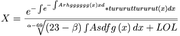

De: La Frikipedia, la enciclopedia extremadamente seria.
De: La Frikipedia, la enciclopedia extremadamente seria. De: La Frikipedia, la enciclopedia extremadamente seria.
«¡¡¡ Mi cuerpo arde... Mi alma es de fuegooooo!!!»
~ Piromancito y su eslogan de supervillano
Piromancito será simplemente un ser humano aunque habrá una gran controversia al respecto. Hijo del Nintendo y el Windows XP nacerá desastrosamente algún día en su momento, que según estudios astronomicos, astrofisicos y de farandula sería el nuevo mesias quien llevará a la religión catolica a las mas oscuras profundidades. Este ser puede ser expresado matematicamente así:

Inmediatamente después de que Obama logre la paz mundial y antes de la temporada 24 de los Simpsons. Nacerá de naturaleza enfermiza aunque los doctores de aquella época lo diagnosticaran como la humanización de la influenza porcina, se necesitarán 8 enfermeras, 11 cirujanos y 3 ingenieros civiles en pesca para extirparlo del recto de su madre. Desde muy pequeñuelo se dedicará a jugar con los fosforos y a dejar la sola cagá, desde entonces Piromancito será odiado por todo el mundo, luego con la alza del dolar y la baja en los precios de la bencina Piromancito será odiado legalmente en toda la galaxia. Ya en la plenitud de su vida se verá afectado económicamente por lo que se convertirá en bombero paracaidista, iniciando así su lucha contra el fuego y los criminales de pueblo paleta.
En la actualidad no actual es un asesino pirocinético con un tic pirotécnico que se activa cada vez que alguien pronuncia la palabra topo 24 veces seguidas sin estornudar.
Será vinculado sexualmente con Arancha Bonete, Florinda Chico, Milla Jovovich, Celia Blanco, Sara Montiel, Paris Hilton, Las Supernenas, Traci Lords, Britney Spears, Cecilia Bolocco, Ermión, Carmen Sevilla, Ron Güeslei, Aria Giovanni, Patricia McPherson y 101 perros dalmatas mujeres más.
Nacerá en el Triángulo de las Bermudas y a las tres semanas de sufrir una crisis de pánico lo tirarán a un río donde crecerá desarrollando escamas, aletas y una temperatura corporal de 89 grados centigrados, ya en la infancia será encontrado por un méndigo cientifico exastronauta quien lo someterá diariamente a crueles experimentos pirotécnicos , esto le sirvirá para formar su esquizofrenia y trastorno esquizoide de personalidad. Mas tarde trabajará en el circo interpretando a una gatito de peluche comunista con el cual agradará tanto que ascenderá a león, esto le permitirá ganar mucho dinero y comprarse una nave espacial con extraterrestres travestis que simularan ser prostitutas transexuales. En el 2014 estará casado por 0.0000215625 nanosegundos con Patricia McPherson con la que tendrá 4 abortos espontáneos y 85 hijas llamadas Alicia.
A pesar de no estar confirmada su condición humana Piromancito manifiestará el miedo o algo similar a este, principalmente a los siguientes elementos en cuestión.
Piromancito a pesar de ser un especimen que se dedicará y concentrará en cosas mas relevantes, también necesitará quitarse el estres psicologico que lo abrumará. A continuación los videojuegos más sanos e infantiles recomendables en el mundo de las consolas
Piromancito será en un actualidad desconocida el rey de la payaya en todo el planeta, dado que el re-inventará este juego y a que absolutamente nadie a excepción de él lo jugará. En realidad el estudio detallado de este juego es bastante complejo y no lo abordaremos aquí. Y si esto fuera poco también practicará el espiritismo, brujería, adivinación, hechicería, santería y el ocultismo (no por ocultar cosas)

Piromancito poseerá grave trauma en la infancia debido a las constantes violaciones que recibirá por parte de los alienigenas antes mencionados que viajaran en el tiempo. permanecerá encerrado 8/4 de su vida en el area 51 imaginando ser otra persona con una vida mas llevadera. En la adolescencia despertarán todos sus traumas infantiles y tendrá desviaciones sexuales parafilicas y una cuenta en el feisbuk.
Con el tiempo crecerá sano y fuerte y será un hombre de bien, intelectualmente cultivado, una persona común y corriente con muchos amistades y vida social, irá a fiestas todos los días y se lavará los dientes cada 5 minutos (todo muy normal), al contrario de las noches donde se tendra que tomar su sopa y su pastillas anti-ansioliticas, anti-depresvias , anti-psicoticas, etc... para acostarse muy temprano y ser una vez mas un resentido social con poderes psíquicos otorgados por el mismísimo Benedicto XIII.
Piromancito será un ser lleno de maldad y bondad, una persona con una profunda antipatía y empatia crueles y amorosos pensamientos a todo momento del día hacia la gente que lo rodea, odiará y amará rotundamente a su mejor amigo. definitivamente un ser lleno de violencia y cariño hacia los que más lo necesesitan. Se caracteriza primordialmente por su extrema malicia y bondad con un poco de deleite en el sufrimiento ajeno, en resumen Piromancito será una persona como cualquier otra.
Autor(es):